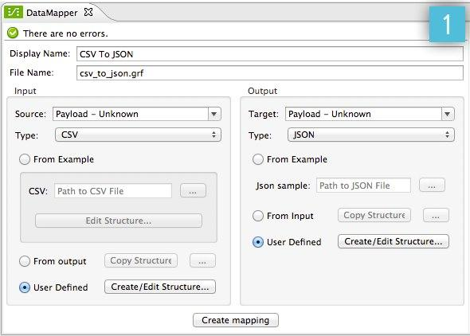
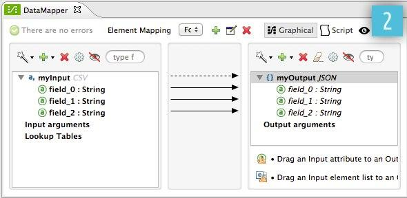
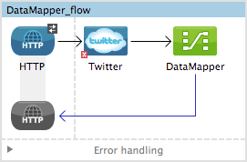
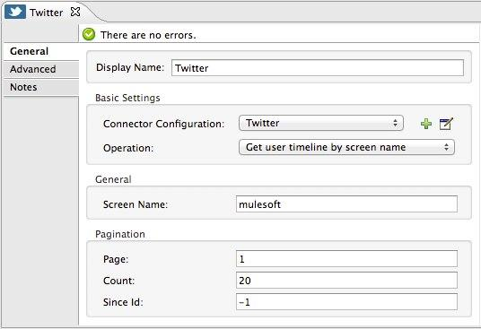
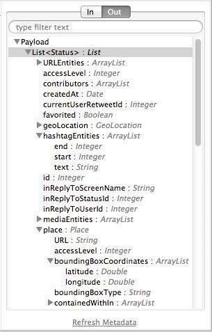
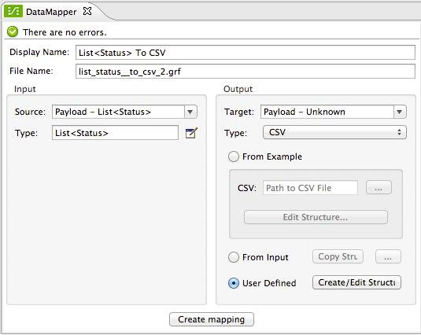
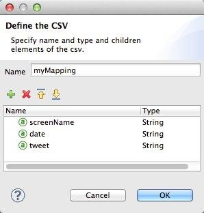
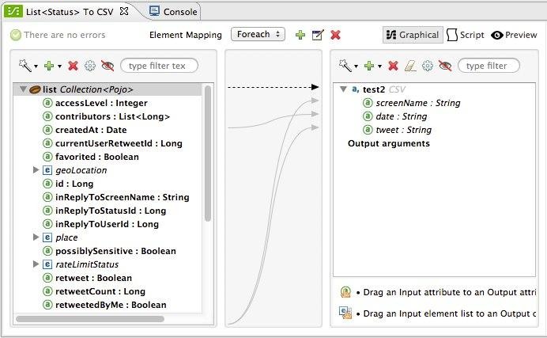

DataMapper Concepts
|
DataMapper will continue to be fully supported in all current and future versions of Mule 3.x, however it will be removed in Mule 4.0 in favor of the Transform Message component (based on DataWeave code). We recommend that if you wish to take advantage of the new capabilities of DataWeave or if you start new projects, upgrade now. A migration tool is now included in Studio, which assists in converting a DataMapper map to DataWeave. Right click on a DataMapper, select Migrate to DataWeave, and follow the instructions. 
If you don’t see DataMapper on your palette, you can enable it by going to Preferences → Anypoint Studio → Palette Profiles and ticking the checkbox Show deprecated Mule Components and Attributes. |
Overview
Anypoint DataMapper takes data in a specific format and outputs the same data in the format of your choice. For example, you can take data stored as XML and output the same data in JSON format.
Both the input and the output can be in any of the formats supported by Mule:
-
"Flat," row-oriented formats:
-
CSV
-
Fixed-width
-
MS Excel sheets
-
-
Structured formats:
-
XML
-
JSON
-
POJO object trees
-
Key-value Maps
-
You configure DataMapper using its GUI, called the graphical mapping editor. This editor has two panes: an Input pane and an Output pane, where you define your input metadata (format, names of fields, etc.) and your output metadata respectively.
For an overview of the graphical mapping editor, see DataMapper Visual Reference.
To see a working example, see the Basic Example in this page. The DataMapper documentation also contains working examples detailing how to perform specific tasks:
| Example | Description |
|---|---|
DataMapper Flat-to-Structured and Structured-to-Flat Mapping |
Shows how to build maps that extract from and populate complex, multiple-level nested structures. |
Two scenarios using DataMapper to extract data from fixed-width input files. |
|
Uses DataMapper’s FlowRef Lookup Table, DataSense and DataMapper to map and transform data, thereby facilitating quick integration with Salesforce. |
|
Makes extensive use of rules for extracting data from nested structures, and translates requests from a SOAP web service for a file-based legacy application. |
|
Demonstrates service orchestration and content-based routing. Based on the use case of patient admission into a hospital. Accepts SOAP requests, then orchestrates several Web services to complete a business process. Uses a DataMapper to map data from the responses from several internal hospital Web services to a response to send to the end user. |
|
Describes how to map nested listed to flat and structured data. |
To learn more about DataMapper’s basic usage and its underlying concepts, continue reading this document.
Basic Usage
Configuring an instance of DataMapper in your flow involves several high-level steps:
-
Insert a DataMapper transformer at the desired location in your application flow.
-
Tell DataMapper what comes in and what comes out (notice the Input and Output panes in the image below).
In the image above, you select
CSVfrom the Type drop-down menu in the Input pane, andJSONin the Output pane. -
Click Create mapping (see image above) to create an initial data mapping. DataMapper will automatically map corresponding fields between the input and output data and will leave any other fields unmapped.
-
If necessary, graphically modify the mapping, defining input elements and attributes to output elements and attributes:

|
For a detailed explanation about what each part of the GUI is for, see DataMapper Visual Reference |
Note that, unlike most components in Anypoint Studio, the DataMapper doesn’t offer a way of being configured via XML code. Mappings must always be done via the GUI, they are then stored as .grf files in the /mappings folder. All you can do via your XML code is to reference one of these existing mapping .grf files.
Input and Output Metadata
The format and structure of the input and output that your DataMapper instance handles must be explicitly specified at design time. Sometimes DataMapper can intelligently deduce what this will be and autocomplete itself accordingly, otherwise you must specify it yourself when creating the mapping. If the input is unknown, by default DataMapper will take the message payload, but you can alternatively choose to take a child element of the payload, a variable, a property or anything that can be referenced via a MEL expression. Similarly, if the output is unknown, DataMapper will output to the message payload by default, otherwise you can also set it to anything that can be referenced via a MEL expression, including child elements of the payload, variables, and properties.
Both the input and the output can be in any of the formats supported by Mule:
-
"Flat" row-oriented formats: CSV, fixed-width file, MS Excel sheets
-
Structured formats: XML, JSON, POJO object trees, and key-value Maps
Metadata describes the data formats of the input and output. For "flat" data, this is a list of column names, data types and possibly sizes. For structured data, the metadata describes a tree-like hierarchy of elements and attributes, with element and attribute names, data types, sizes and so on.
DataMapper is intelligently predictive, it will automatically populate fields when it can guess what you’re likely to want to map. If Anypoint Studio can use DataSense to access metadata about the elements that fit in the flow before and after your DataMapper instance, then the structures of input and output data will be autocompleted as soon as you place the DataMapper instance in the flow. If these predictions don’t match what you need, you’re free to edit these values at will.
When Studio has access to the MetaData at design time, you can preview what this known metadata looks like before adding a DataMapper to your flow. The Metadata Explorer, displays the data structure of both the input and output of any component in the flow. By looking at two adjacent components, you can tell if they can truly communicate with each other effectively or if some conversion is necessary in between, the DataMapper is often the ideal tool to make this conversion.
Basic Example
The following example can illustrate the usefulness of DataMapper:
-
Create a new Studio project, drag an HTTP connector into the canvas, it will become both the inbound and outbound the endpoint of a new flow. Next to this HTTP connector, drag and drop a Twitter connector followed by a DataMapper.
 -
Leave the HTTP connector to its default settings. Then configure the Twitter Connector as follows:
-
Obtain access to the Twitter API by registering an App in the Twitter Developers page.
For instructions on how to do this see Anypoint Connector quickstart, under the section Obtaining Access to the Twitter API.
-
Click the green plus sign next to Connector Configuration to create a new Global Element. Name it and provide the Consumer Key, Consumer Secret, Access Token, and Access Token Secret that Twitter gave you after registering your app. Click Test Connection to ensure that your configuration works, then click Ok to close the dialogue.
-
Under Operation select Get user timeline by screen name
-
In Screen Name, write the screen name of a twitter user, for example MuleSoft

-
-
Still having the Twitter connector selected, take a look at the MetaData explorer, on the right of the properties editor. It displays the metadata of both message that arrives to this component, and of the message that leaves it. Select Out to see the data structure of the output.
As you can see, the output is a large and complex structure with nested items at different levels. Suppose that for your output you don’t need all that information, all you want is a simple CSV with three fields in it, here is where the DataMapper comes in handy.
-
Select the DataMapper to edit its properties. Notice that the Input fields are already populated, they are taking the metadata you just viewed and using it as it is. To set up the output to be what you want, you must do the following:
-
Select CSV out of the dropdown menu next to Type
-
Click the User Defined radio button, then click Create/Edit Structure
 -
Give your structure a Name
-
Add three new fields by clicking the green plus sign, name these fields screenName, date and Tweet
 -
Click Create Mapping
When creating a flow with a DataMapper and connectors for which there’s known metadata at design time, the order in which you configure these components can save you a lot of work. If you first configure adjacent connectors and then the DataMapper, DataMapper will be able to predict the required input and output data structures and automatically populate its fields accordingly.
-
-
The mapping is then created. Next you must tell DataMapper what input field matches what output field. Notice that there already is an arrow joining screenName on both the input and output schemas, as both fields have the same name, DataMapper correctly assumed they were meant to be mapped together. Drag the input field createdAt onto the output field date and then the input field text onto the output field tweet, this will map them accordingly.
Input Output screenName
screenName
createdAt
date
text
tweet
-
All done! You can now deploy your app and test it by reaching out to the address
localhost:8081on a web browser, you should obtain a CSV file containing a list with the selected fields.
Element Mappings
Element mappings pair an element or a collection of similar elements from the input schema with an element or collection of elements in the output.
Once two elements are mapped, by default the input will be simply replicated into the output, but if you want you can define transformations that populate the output elements. If you want to define a transformation, you must write a MEL expression that computes the output value based on the values of input elements.
Element Mapping Levels and Nested Lists
Before mapping elements in a list, you must first map the list itself to an output object or list. Once the input list maps to the output object or list, you can map its individual child elements. You may have to map several levels of elements to get access to deeply nested input or output. These additional element mappings created to descend levels in a document may be referred to as mapping levels.
For an illustration of this technique, see Mapping Elements Inside Lists.
Advanced Example (With Element Mappings)
An example can make clearer the relationship between a mapping flow, element mappings, and individual transformations represented graphically and by scripting code.
|
The specifics of using the DataMapper UI to create a mapping flow like this one are covered in DataMapper Visual Reference. |
In this case, a mapping flow receives as input an XML document with lists of employees and managers with their contact information, and generates a JSON document with a list of people and phone numbers. The input data looks like this:
<staff type="staff" id="id0">
<employees>
<employee firstname="john" lastname="harrison" gender="m" phone="1111 1111"/>
<employee firstname="jane" lastname="doe" gender="f" phone="2222 2222"/>
<employee firstname="Harry" lastname="No Phone" gender="m" phone=""/>
</employees>
<managers>
<manager name="Larry" lastname="Larson" phone="4444 4444"/>
<manager name="John" lastname="Johnson" gender="M" phone="6666 6666"/>
</managers>
</staff>The final output looks like this:
JSON output for phone list
{
"contact" : [ {
"name" : "harrison, john (emp)",
"phone" : "1111 1111"
}, {
"name" : "doe, jane (emp)",
"phone" : "2222 2222"
}, {
"name" : "No Phone, Harry (emp)",
"phone" : null
}, {
"name" : "Larson, Larry (mgr)",
"phone" : "4444 4444"
}, {
"name" : "Johnson, John (mgr)",
"phone" : "6666 6666"
} ]
}This screenshot shows the graphical mapping editor with the resulting mapping displayed.
The screenshot of the mapping flow editor shows the following:
-
The input XML schema (on the left), with staff as a root element, and the
employeesandmanagerscollections as descendants. -
The
employeesXML node, with a list ofemployeeelements, which contain name, gender and contact information. -
The output JSON schema for the
phonelist. -
The element mapping dropdown (at top center) shows a list of three mappings from the source to target data.
-
The element mappings shown in this list are:
-
For each 'staff' → 'phone list'– Not selected. A top level element mapping that connects the root nodes of the two structures, represented by the greyed-out dotted arrow in the center column from *
stafftophonelist.* This indicates that at a high level, the staff input document tree contributes to the *phonelist* output document tree. ** Without creating this top element mapping, the other two element mappings cannot be created.-
For each 'employee' → 'contact'– currently selected, highlighted in the drop-down. Displayed in the main body of the editor, by the solid arrows that connect
employeeattributes e.g. firstname, lastname, and phone to the name and phone fields in the contact node. Data from theemployeeinput element, such as the attributes of the employee node, can be mapped to thecontactoutput elements. One contact element will be populated for each employee element in the source. -
For each 'manager' → 'contact' – Not selected. Specifies that data from the manager input elements can be mapped to the contact input elements. One contact element will be populated for each manager element in the source.
-
-
The assigned script expression for the output field "name" is showing, in the expression editor in the lower-right corner. This is a MEL (Mule Expression Language) expression that concatenates the last name and first name, and adds the suffix '(emp)' to denote an employee. Note that the arrows that lead from the firstname and lastname fields in the input reflect the fact that the input.firstname and input.lastname fields are used in the expression. You can view the script for all fields in this element mapping tog
For comparison, see the following screenshots that show the 'staff' → 'phonelist' and 'manager' → 'contact' element mappings.
Notice how in viewing each element mapping, some elements (those eligible to be mapped) are bolded, and some (those not eligible) are grayed out.
For each of the element mappings, Mule iterates over the input nodes selected by that element mapping (thus the "Foreach" in the names of the element mappings). For each node, Mule evaluates the assigned script expressions to populate the output data. So in this instance:
-
The 'staff' → 'phonelist' mapping contributes nothing to the output, as there are no assigned script expressions associated with it;
-
The 'employee' → 'contact' mapping code executes, assigning employee data to nodes in the JSON output document;
-
The 'manager' → 'contact' mapping code executes, assigning manager contact data to more nodes in the JSON output format.
The final JSON output includes contact information for both managers and employees.
Narrowing Down the Input of the Message
While multiple levels of element mapping is the most common way to deal with data in nested lists, in some situations, it is only necessary to extract a few pieces of data from a nested structure, in those cases you can ignore parts of the data structure tree and focus on dealing only with what you need.
Root Element
If your input is an XML structure, you can select what XML element in the tree you want to use as the root element, and only deal with the branches below that level.
Filters
If your input is an XML structure, you can also enable filters so that you only need to deal with the elements you need when creating the mapping.
Rules
As a more advanced feature, to permit direct access to fields within nested structures, DataMapper element mappings support rules . A rule is an XPath query that can extract specific details from the nested structure and store them in an output element or attribute.
|
XPath, Structured Data and Rules XPath syntax is used to query nested structures even when those structures are not based on XML-- for example, you can drill down into a JSON document or a key-value Map with an XPath syntax query, and DataMapper treats the structure as analogous to an XML node hierarchy, and traverses the structure regardless of the actual underlying representation. |
For more information on Rules, see "Using Rules to Extract Fields from Complex Structured Data" in Building a Mapping Flow in the Graphical Mapping Editor .
Filter Expressions
An element mapping can have a filter expression applied, to select records to skip over rather than process. For example, in the DataMapper above, employee Harry No-Phone has an empty phone number defined. A filter could be created to skip over records without a phone number, or an invalid one.
For more details on Filters, see "Setting an Element Mapping XPath Filter" in Building a Mapping Flow in the Graphical Mapping Editor.
Arguments and Lookup Tables
In addition to the message payload, DataMapper supports mapping flow arguments, for passing data into and out of the mapping flow, and lookup tables, that can be used to enrich data during the transformation process. (For our phone list example, one could parse a well-formed telephone number to extract country code and area code, then look up the country name, cost per minute to call, and other details in a lookup table.)
For more on input and output arguments, see the discussion of "Using Data Mapping Input and Output Arguments" in Building a Mapping Flow. For more on lookup tables, see "Using Lookup Tables" in Building a Mapping Flow.
How DataMapper Processes Transformations
Each element mapping implements the following basic integration pattern:
-
Iterate over the source, extracting data elements that match the input side of the element mapping;
-
Filter the incoming elements, if a filter clause is set, to skip non-matching elements;
-
For each element that passes the filter, evaluate the generated code for that element mapping;
-
That generated code sets the attributes of the new records or nodes created as output.
Languages for Transformation Code: MEL and CTL2
The transformation code for DataMapper can be generated in one of two languages: Mule Expression Language (MEL) or CTL2 (Clover Transformation Language).
MEL is the default language and offers a number of technical advantages:
-
MEL is used throughout the rest of Mule as the primary expression language, so using it in DataMapper makes for an experience more consistent with the rest of Mule ESB
-
MEL is being actively developed with new capabilities to continue to expose features
-
MEL can call out to arbitrary Java classes when needed
CTL2 was licensed from a third party for use in past versions of DataMapper, and is still fully supported for reasons of backward compatibility. However, Mule recommends that you use MEL rather than CTL2 for future DataMapper development.
See Also
-
For a more detailed explanation about what each part of the GUI does, see DataMapper Visual Reference
-
For complete information on MEL, see Mule Expression Language
-
For complete information on CTL syntax and capabilities, including a language and functions reference, download the Mule Datamapper CTL2 Reference.